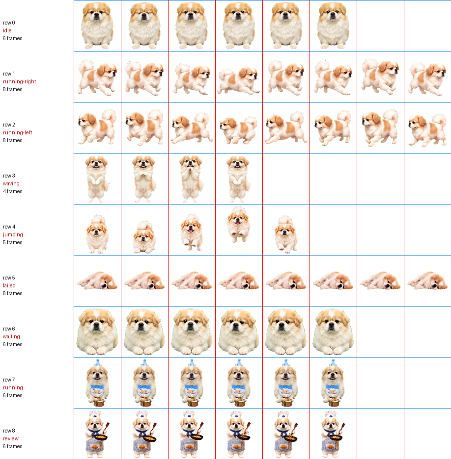

以 ChatGPT / Codex Pets 的功能基线为下限，围绕「淘淘 New」现有资产，给出一套可落地的构想、架构与分阶段计划。
先给判断，再给依据。
[6,8,8,4,5,8,6,6,6] 与官方规格逐行吻合。缺的不是美术，而是元数据。桌面宠物的失败通常不在功能，而在窗口层。建议正式动工前先做三个最小验证，任何一项不通过都要回头改选型：
| 假设 | 成功判据 | 失败后果 |
|---|---|---|
| A. 逐像素点击穿透 透明区域放行鼠标 |
点击宠物身体可拖动；点击周围透明区域，事件落到下层窗口（如浏览器、编辑器） | 整个矩形窗口吞掉点击，用户无法操作下方的应用 —— 直接不可用 |
| B. 不抢焦点 WS_EX_NOACTIVATE |
点击宠物时，当前前台窗口的输入焦点不丢失（正在打的字不中断） | 每次点宠物都会打断输入，用户会立刻卸载 |
| C. 全屏自动让位 | 进入全屏视频/游戏/演示后宠物自动隐藏，退出后恢复原位置 | 置顶窗口遮挡全屏内容，被判定为"流氓软件" |
对资产板块中两个文件的解析结论 —— 这是全部设计的事实基础。
pet.json（196 字节）{
"id": "taotao-new",
"displayName": "淘淘 New",
"description": "黄白长毛、胖乎乎的淘淘新版本，
包含生日与小厨师动画。",
"spritesheetPath": "spritesheet.webp"
}
这是 Codex Pets 的标准清单，字段只有识别信息。没有 spriteVersionNumber，按规范即 V1（8×9）。
spritesheet.webp| 行 | 状态语义 | 规格帧数 | 实测帧数 | 实测内容包围盒（宽×高） | 结论 |
|---|---|---|---|---|---|
| 0 | idle 待机 | 6 | 6 | 133×194 | 一致 |
| 1 | running-right 右向 | 8 | 8 | 164×153 | 一致 |
| 2 | running-left 左向 | 8 | 8 | 158×149 | 一致 |
| 3 | waving 挥手 | 4 | 4 | 104×193 | 一致 |
| 4 | jumping 跳跃 | 5 | 5 | 94×196 | 一致 |
| 5 | failed 受阻 | 8 | 8 | 165×76 | 一致 |
| 6 | waiting 等待输入 | 6 | 6 | 173×193 | 一致 |
| 7 | running 处理中 | 6 | 6 | 95×198 | 一致 |
| 8 | review 检查产出 | 6 | 6 | 101×198 | 一致 |

tools/pet_sheet_probe.py 自动生成）：红竖线为列边界，蓝横线为行边界。running 与 review。缺陷一：各状态姿态的横向纵向对齐不一致。内容在单元格内是横向居中（实测中心 cx=95.5~95.0，单元格中心 96）且纵向居中的。但居中不等于对齐：站立姿态的触地点在单元格 y≈200–202，而侧身跑动姿态在 y≈182–183，趴卧姿态只在 y≈141。
后果：若渲染器简单地按"单元格底边"贴地，切换到跑动时角色会整体下沉 19–20px、切到趴卧时会悬空 61px。观感上就是"每次换动作都上下抖一下"。
缺陷二：pet.json 不含任何动画元数据。没有帧率、没有循环/单次标记、没有锚点。规范只约定"播放从第 0 列起连续非空帧"，其余全靠运行时自行决定。这不是资产的问题，而是规范留给开发者的自由度 —— 也意味着这部分设计必须由我们补齐并固化成契约。
依据官方文档（developers.openai.com/codex/pets）梳理。这是"至少实现"的清单 —— 也是我们的功能验收表。
| # | 功能 | 行为细节 | 优先级 |
|---|---|---|---|
| 1 | 悬浮宠物窗口 | 在 macOS / Windows 桌面端悬浮于其他应用窗口之上 | 必须 |
| 2 | 宠物下方控制条 | 指针悬停时出现；铅笔图标开新对话、语音图标、铃铛图标看线程 | 必须 |
| 3 | 快捷输入 Quick Chat | 支持 @ 添加上下文、$ 选择技能；发起的对话不隶属任何项目 | 必须 |
| 4 | 全局快捷键 | Windows 默认 Win+Alt+P：显示控制条并聚焦 Quick Chat；可自定义 | 必须 |
| 5 | 四种状态语义 | Running / Needs input / Ready / Blocked，各自的含义与动画 | 必须 |
| 6 | 状态优先级仲裁 | 需要输入 > 已受阻 > 就绪 > 运行中；多会话时只呈现最优级 | 必须 |
| 7 | 活动托盘 | 线程列表；点击线程打开完整对话，可折叠；与系统通知相互独立 | 必须 |
| 8 | 拖拽与位置记忆 | 拖动移动，选择与位置在重开应用后保留 | 必须 |
| 9 | 显示 / 隐藏 | 右键 Hide、/pet、命令菜单、设置内开关四种入口 | 必须 |
| 10 | 宠物尺寸 | 设置内调大小，可 Reset 回默认 | 重要 |
| 11 | 点击切换宠物 | 单击直接轮换到下一位伙伴 | 重要 |
| 12 | 自定义宠物管理 | 创建后 Refresh 重扫；本地目录 ~/.codex/pets/<id>/，每宠一个文件夹 | 重要 |
| 13 | Mini 模式 | 只显示聊天控制条，不显示宠物本体 | 重要 |
| 14 | 减少动态效果 | 遵循系统设置；开启时用静态帧替代雪碧图动画 | 重要 |
| 15 | 自定义宠物上传规格 | 透明 PNG / WebP，必须精确 1536×1872，≤ 20 MiB | 重要 |
| 16 | Appshots | Windows：双 Alt 键截当前前台窗口并送入主应用提问；macOS 可送入宠物控制条 | 可选 |
| 17 | Computer Use 画中画附着 | 仅 macOS：PiP 窗口跟随宠物移动 | 平台限制 |
| 18 | 网页版宠物 | 仅出现在受支持的 Work 对话内，无悬浮层、无活动托盘、无 /pet | 非目标 |
先把"这是什么产品"想清楚，架构才有判断依据。
这不是电子宠物游戏。观察 ChatGPT Pets 的设计动因：当用户同时开着多条长任务会话（一个在写代码、一个在跑研究、一个卡在等批准），传统的"通知"会在合适的时候打断他，而"状态栏"又太远。宠物提供了一个 不打扰、但一直在余光里 的通道。
把宠物拆成三层，每层只依赖下一层的接口。这是整个设计里最重要的结构决策 —— 它让"动画怎么做"和"状态从哪来"两件完全不同的事互不纠缠。
如果直接把状态源的原始状态绑定到动画，会出现三类问题，仲裁器就是为它们而生：
| 问题 | 现象 | 仲裁策略 |
|---|---|---|
| 状态闪烁 | 任务在 running / needs-input 之间高频抖动，宠物动作抽帧 | 变化限流：状态切换最小间隔 500ms；连续同向变化合并 |
| 重要状态被淹没 | needs-input 只闪了 0.2 秒就被下一条 running 覆盖 | 粘滞（sticky）：needs-input 至少驻留至用户确认或超时 |
| 多会话争抢 | 三条会话同时活动，宠物来回横跳 | 取优先级最高的一条作为主状态，其余以数字角标表示；角标变化不改变主动画 |
桌面宠物的选型瓶颈不是业务逻辑，而是窗口层的三项原生能力能否实现，以及常驻成本能否接受。
| 方案 | 透明置顶窗口 | 逐像素点击穿透 | 运行时体积 / 常驻内存 | 优势 | 主要风险 |
|---|---|---|---|---|---|
| Electron + Node 侧原生模块 |
成熟：transparent:true + frame:false |
需自研：窗口过程拦截 WM_NCHITTEST，或 setIgnoreMouseEvents + 前端命中回传 |
≈250 MB / 200–400 MB | 与 ChatGPT 桌面端同栈，行为最可复刻；Web 渲染与精灵播放零成本 | 常驻内存偏高；纯 JS 侧做点击穿透存在竞态 |
| Tauri 2 Rust + WebView2 |
支持：无边框 + 透明 + 置顶 | 需 Rust 侧自定义窗口过程（windows-rs） |
≈10 MB / 80–160 MB | 常驻成本最优的一档；WebView2 在 Win10 21H2+/Win11 预装；Rust 侧调 Win32 干净 | 透明 + 穿透组合仍要写原生代码，调试链路比 Electron 长 |
| WPF / WinUI 3 .NET 8 |
成熟：AllowsTransparency + TopMost |
需自定义 HitTest 或改用分层窗口 UpdateLayeredWindow |
自包含 ≈75 MB / 60–120 MB | 原生手感；托盘、开机自启、热键、DPI 库齐全；无浏览器内核负担 | 精灵播放器要自己写；Web 生态资产（Lottie、CSS 动效）不可复用 |
| Python + PySide6 原型专用 |
支持 | 需 ctypes 调 Win32 |
打包后 ≈65 MB / 120 MB+ | 原型速度最快，适合先跑状态机与联调模拟器 | 分发、常驻性能与体积都不理想，不建议作为最终形态 |
| 原生 C++ / Rust + Direct2D | 完全可控 | 完全可控，最精确 | 最小 / 最低 | 性能与资源占用天花板；窗口行为可以做到教科书级 | 开发与迭代成本最高；UI 面板、设置页、活动托盘全部要从头做 |
第一步（M1–M2）：Electron。理由不是它最好，而是它离参照物最近。ChatGPT 桌面端本身就是 Electron 应用，同样的透明窗口策略、同样的渲染管线，意味着"复刻行为"这件事的试错成本最低。这个阶段的目标是把交互、状态机、锚点这些真正难的东西做对，而不是优化体积。
第二步（M2 之后，按需）：评估平移 Tauri 2。前提是第一步已经守住了架构纪律 —— 即：
createOverlayWindow()、setClickThrough(mask)、registerHotkey()、tray()。其余能力（自启、持久化）走标准 Node/Rust 各写一份即可。守住这三条，迁移成本就是重写一个几百行的适配层，而不是重写整个应用。反之，如果一开始图省事到处直调 Electron API，就永久失去了这个选项。
最小可用形态需要 两个窗口、一个进程，而不是单窗口。原因是需求本身互相冲突：宠物本体要"不抢焦点、可穿透"，而输入框必须"接受键盘焦点、不被穿透"。
这一组样式决定了宠物是"贴心伙伴"还是"流氓软件"，务必在 M0 阶段全部验证：
| 扩展样式 / 行为 | 作用 | 不做会怎样 |
|---|---|---|
WS_EX_TOPMOST | 悬浮于普通窗口之上 | 被任何窗口遮挡，功能失效 |
WS_EX_LAYERED | 支持 alpha 混合与逐像素透明 | 宠物带白色矩形底板 |
WS_EX_TOOLWINDOW | 不进 Alt+Tab、不占任务栏 | 切窗口时列表里多出一个无名项，立刻招致反感 |
WS_EX_NOACTIVATE | 点击不夺取前台焦点 | 点宠物就打断正在输入的文字 |
WM_NCHITTEST 返回 HTTRANSPARENT | 透明像素区域放行鼠标给下层窗口 | 窗口矩形吞掉所有点击，下方应用不可操作 |
| Per-Monitor V2 DPI 感知 | 多屏不同缩放比下不模糊、不错位 | 在 150% 缩放的副屏上宠物糊成一团 |
| 不注册任务栏节流抑制 | 允许系统节能；自身也要主动降帧 | 笔记本续航下降，用户会关掉它 |
| 模块 | 职责 | 关键接口 | 可测性 |
|---|---|---|---|
pet-core/loader | 扫描宠物目录、解析清单、按 V1/V2 规范校验雪碧图 | loadPetPack(dir) → PetPack | 纯函数，易单测 |
pet-core/sprite | 按 (row, col) 切片绘制、应用缩放与锚点偏移、减少动态效果时冻结首帧 | render(state, frame, scale) | 纯函数 |
pet-core/machine | 状态机：循环/单次、回退状态、高优打断 | transition(status) → anim | 纯函数，可穷举 |
pet-core/arbiter | 优先级、粘滞、限流、多会话聚合 | ingest(event) → primary | 纯函数 + 虚拟时钟 |
pet-core/behavior | 自主漫游、微动作、打盹调度 | tick(dt) → intent? | 注入随机种子后可复现 |
host/overlay | 创建透明置顶窗口、移动、命中测试、穿透 | createOverlayWindow() | 必须真机验证 |
host/hotkey | 全局快捷键注册、占用检测、自定义 | registerHotkey(seq) | 真机验证 |
host/tray · host/autostart | 托盘菜单、开机自启注册表项 | — | 集成测 |
source/* | 状态源适配器：本地 HTTP、stdio IPC、日志尾随、手工模拟器 | subscribe(cb) | 可用回放夹具测 |
注意 pet-core 全部是纯函数 —— 这是刻意的。把"状态→动画"的判断做成纯函数后，可以用一个状态事件回放夹具把它穷举测试，不必启动窗口。整个项目最容易被写乱的地方就是这里，先约束住。
这是唯一一个"做不出来就不能上"的需求。三种实现路线：
| 路线 | 做法 | 优点 | 代价 |
|---|---|---|---|
| 窗口过程拦截 首选 | 子类化窗口过程，收到 WM_NCHITTEST 时把光标坐标换算到帧内坐标，采样该像素 alpha；低于阈值返回 HTTRANSPARENT，否则返回 HTCLIENT | 精确、无竞态、零延迟；被广泛验证的做法 | 需要宿主提供原生调用能力（Rust/C#/C++ 直接写，Electron 需原生模块） |
| 分层窗口 | 用 UpdateLayeredWindow 提交带 alpha 的位图；系统按透明度自行放行鼠标 | 系统级行为，最省心 | 必须自行合成位图，无法直接复用浏览器渲染；Web 技术栈不适用 |
| 前端回传命中 | setIgnoreMouseEvents(true, {forward:true}) 全局穿透，前端用 elementFromPoint 判断是否在宠物身上，动态切回可点击 | 纯 JS，无需原生模块 | 存在竞态：穿透状态下前端收不到鼠标事件，只能靠 forward 的移动事件近似判断，快速划过时会漏判 |
置顶窗口会在全屏视频、游戏、屏幕共享时造成遮挡，是这类软件被判为"垃圾软件"的头号原因。对策是检测前台窗口是否全屏，并主动隐藏：
SHQueryUserNotificationState）—— 处于"全屏演示"或"勿扰"时一并让位。官方默认 Win+Alt+P。这个组合并不安全：部分显卡驱动套件、录屏工具、输入法都会占用 Win+Alt+字母 段。RegisterHotKey 失败时必须给出明确反馈，并引导用户改键，而不是静默失败。
实践建议：启动时注册失败 → 托盘气泡提示 + 自动降级到备选序列 → 设置页提供键位录入与占用检测（录入时直接尝试注册，冲突即提示）。
| 风险点 | 对策 |
|---|---|
| 持续 60fps 重绘浪费 GPU | 精灵动画最高 14fps 即可。用 CSS transform + background-position 交给合成器，避免触发布局与重绘 |
| 长期无交互仍满速运行 | 分级降频：无交互 30s → 降到 4fps；5min → 冻结为静态帧（复用趴卧帧作为打盹） |
| 电池模式耗电 | 检测电源状态，切换为交流/电池两套帧率策略；电池下默认暂停自主漫游 |
| 内存缓慢增长 | 活动托盘的历史线程数设上限（如 50 条），超出的截断；不缓存原始截图 |
| 多显示器变更导致错位 | 监听显示器增删/分辨率/缩放变化事件，重新校验宠物坐标是否落在有效工作区内，否则回落到主屏右下角 |
.. 或绝对路径的清单字段；宠物目录名限定为安全字符集；解析后确认目标文件仍位于允许的根目录内（防目录穿越）。.webp / .png，先读文件头魔数，再交给解码器；不做任何基于扩展名的信任。id / displayName / description / spritesheetPath / spriteVersionNumber），其余忽略。绝不执行清单中的任何内容，绝不解引用外部 URL。displayName 与 description 是外来文本，渲染时必须转义，且限制长度，防止撑破 UI 或注入标记。技术难点都在窗口层，但产品成败在状态从哪来。如果没有真实的状态可以订阅，宠物只能靠模拟数据空转，这个软件就没有存在意义。可选路径按可控性排序：
| 状态源 | 接入方式 | 适用 | 可信度 |
|---|---|---|---|
| 自研 agent 运行时 | 本地 HTTP / WebSocket 推送 | 有自主可控的任务引擎 | 最高 |
| Codex / Claude Code 等 hooks | 在工具的钩子点写状态文件或 POST 到本地端口 | 以编程 agent 为主要工作负载 | 高 |
| 进程与日志尾随 | 监听目标进程存活 + 解析日志关键词 | 无法改动的第三方工具 | 中，需容忍误判 |
| 手工模拟器 | 内置一个可点按的状态注入面板 | M1 阶段的开发与联调必需 | 仅测试 |
{ sessionId, status, title, ts }，只增不改。好处有三：一是状态源适配器可以随意替换；二是开发期可以用录制好的事件回放驱动全部 UI 测试；三是仲裁器的粘滞与限流逻辑可以接虚拟时钟做确定性单测。这一步的抽象成本很低，收益贯穿整个项目生命周期。
三个文件，职责严格分离 —— 这是不污染厂商格式、又能承载自研参数的关键。
| 文件 | 归属 | 内容 | 可否回写 |
|---|---|---|---|
pet.json | 厂商格式（Codex/Codex Pets） | 身份信息与雪碧图路径。保持与官方完全一致，便于双向流通 | 只读 |
behavior-map.json | 社区约定的 sidecar | 行→状态→帧列的映射、语义别名、意图描述、内容包围盒 | 可自动生成 |
desktop-pet.json | 本运行时扩展 | 帧率、循环策略、锚点基线、缩放、状态优先级、行为层参数、窗口与交互约定 | 本项目定义 |
pet.json？因为那样这份宠物包就再也不能被 ChatGPT/Codex 直接识别了 —— 而"资产可双向流通"本身就是这个格式最大的价值。反过来，把渲染参数写进 sidecar 的代价几乎为零，只需在加载时合并两份清单。desktop-pet.json 里的帧率与锚点都应当由工具自动生成而非手写。我们已经用 tools/pet_sheet_probe.py 与 tools/anchor_calibrate.py 跑通了这条链路 —— 换一只宠物只需重新跑一次分析，不必重新推导。
{
"schema": "desktop-pet/runtime-manifest/v1",
"anchor": {
"mode": "per-state-fixed", // 每状态固定锚点，禁止逐帧贴地
"groundY": 202, // 单元格坐标系内的统一地平线
"horizontal": "cellCenter" // 横向已居中，无需补偿
},
"states": {
"idle": { "row":0, "frames":6, "fps":8, "loop":true, "baselineY":200, "offsetY":2 },
"failed":{ "row":5, "frames":8, "fps":5, "loop":true, "baselineY":141, "offsetY":61 },
"waving":{ "row":3, "frames":4, "fps":8, "loop":false, "baselineY":201, "offsetY":1,
"fallbackState": "idle" }
},
"reducedMotion": { "strategy": "freeze-frame", "frameIndex": 0 }
}
offsetY 是自动算出来的：groundY − baselineY。它保证了站立、跑动、趴卧三种姿态的触地点落在同一条地平线上。
官方只定义了四种状态，资产提供了九行动画。映射关系就是我们要做的设计决策 —— 下表是建议方案：
| 业务状态 | 含义 | 选用动画行 | fps | 循环 | 气泡文案 | 优先级 |
|---|---|---|---|---|---|---|
| 无任务 | 没有活动会话 | idle 行 0 | 8 | 循环 | — | 4 |
| 需要输入 | 等待批准 / 回答 / 决策 | waiting 行 6 | 6 | 循环 + 脉冲 | 需要输入 | 1 |
| 已受阻 | 执行失败或系统错误 | failed 行 5 | 5 | 循环 | 已受阻 | 2 |
| 就绪 | 已完成但未被查看 | waving 行 3 → review 行 8 | 8 / 8 | 单次 → 循环 | 就绪 | 3 |
| 运行中 | 任务正在推进 | running 行 7 | 12 | 循环 | 运行中 | 4 |
另外四行（running-right / running-left / jumping 及一件性动作）不参与业务状态映射，归行为层调度使用。这样的分工避免了两类需求互相污染。
needs-input 激活后驻留至用户明确确认（打开会话）或超时（如 5 分钟），中途不被 running 覆盖。这是产品可信度的核心。waving / jumping 这类一次性动画播放期间不接受状态切换，播完再按当前最高优先级状态接管。否则会出现"挥手挥到一半被切断"的廉价感。让宠物在"没事干"的时候依然像活的 —— 这是与官方实现最容易拉开差距的地方。
| 行为 | 触发条件 | 实现 | 注意 |
|---|---|---|---|
| 自主漫游 | idle 持续随机 25–90s | 随机方向 + 随机距离（80–320px），用 running-left/right 驱动窗口位移 | 速度必须按屏幕像素/秒归一化，否则缩放后观感不一致。默认缩放下建议 ~96 px/s |
| 边缘策略 | 碰到工作区边界 | 停止、翻转朝向、短暂停顿后再动 | 不要贴着任务栏走；用工作区（去除任务栏）而非整个屏幕矩形 |
| 微动作 | idle 持续随机 40–150s | 随机播一次 waving 或 jumping，播完回 idle | 频率要有上限，否则从"有生命感"变成"多动症" |
| 打盹 | 连续 5min 无任务且无交互 | 复用 failed 行的趴卧帧作为睡眠循环，降到 2fps | 零额外美术成本 —— 趴卧姿态天然适合当睡姿 |
| 跟随鼠标 | 可选，默认关闭 | 朝向鼠标方向播放对应方向的跑动 | 极易变成干扰源，务必默认关闭并提供开关 |
| 拖动响应 | 用户按住拖动 | 暂停一切自主行为；松手后短暂"落地"停顿再恢复 | 拖动期间不播漫游动画，避免视觉冲突 |
实测发现，行 7 与行 8 画的是生日派对（派对帽 + 蛋糕）和小厨师（厨师帽 + 围裙 + 平底锅），而不是规范里语义对应的 running（处理中）与 review（检查产出）。这是作者在规范内做的创意发挥。两种用法：
建议做法是第一种作为默认，第二种作为可配置的彩蛋模式 —— 这样既能被 Codex 原样识别，又能在自研端释放资产的表达力。
四个阶段，每阶段以"可验证的退出判据"收尾，而不是以时间收尾。
目标：在写任何业务代码之前，用一个最小 demo 证明窗口层可行。这是整个项目唯一可能"推翻选型"的阶段。
要验证的三件事：
WM_NCHITTEST 逐像素穿透（§7.1 路线一）WS_EX_NOACTIVATE 生效：点击宠物不夺焦点退出判据：三项全部通过。任一失败 → 换栈重做 M0，而不是带着风险进 M1。
产出：spike 工程 + 一页结论记录（含失败项与替代方案）。
目标：宠物能正确、稳定地被驱动，且交互与常驻基础能力齐备。
退出判据：用模拟器把 5 个业务状态随机切换 500 次，不出现姿态跳变、不出现锚点悬浮；空闲 CPU 占用 < 1%；常驻内存稳定不增长。
可直接复用现成产物：动画映射验证器.html 已经验证了帧率、锚点与状态映射的正确性，M1 的渲染层可直接移植其逻辑。
@ 上下文、$ 技能）、语音入口、铃铛与线程列表退出判据：对照 §3 功能基线表逐条验收，1–15 项全部通过；在一台多屏 + 高 DPI 的机器上做一轮真实使用。
退出判据：拿到一份从未见过的第三方宠物包，工具能在无人干预下完成分析、校验并成功加载。
| 风险 | 可能性 | 影响 | 缓解措施 | 触发信号 |
|---|---|---|---|---|
| 逐像素穿透在所选栈中实现困难 | 中 | 致命 | M0 优先验证；储备三种实现路线（§7.1） | M0 demo 中透明区域仍吞点击 |
| 无真实状态源，产品空转 | 中 | 致命 | M1 起就把状态源抽象成事件流；尽早接通至少一个真实 hook | M2 结束时仍未接任何真实数据源 |
| 被误判为流氓软件（置顶遮挡 / 抢焦点） | 中 | 高 | 全屏让位 + 不夺焦点 + 托盘可退出，三项均为硬性验收项 | 用户反馈"看不见下面窗口" |
| 全局快捷键被占用 | 高 | 中 | 注册失败即提示 + 自动降级 + 可自定义 | RegisterHotKey 返回失败 |
| 常驻内存被认为过重 | 中 | 中 | 宿主选型预留 Tauri 迁移路径；分级降频 | 空闲内存长期 > 300 MB |
| 多显示器 / DPI 场景错位 | 高 | 中 | Per-Monitor V2；监听显示配置变化并回退 | 拔插显示器后宠物消失或模糊 |
| 恶意宠物包 | 低 | 高 | 文件头校验 + 尺寸上限 + 路径穿越防护 + 字段白名单（§7.5） | 加载陌生来源的宠物包时 |
| 第三方宠物资源版权 | 低 | 高 | 默认只加载自有资产；若做分发平台需建立举报与下架流程 | 宠物形象明显源自既有 IP |
pet.json，原包仍可被 Codex 直接识别| 文件 | 说明 |
|---|---|
动画映射验证器.html | 可交互的动画验证工具：状态切换、帧率、缩放、锚点校准开关（对比"未校准"的悬浮效果）、自主漫游演示、四状态模拟驱动 |
atlas-map.png | 图集地图，标注行号 / 状态名 / 帧数，附行列分界 |
pet.json | 原始清单，保持与 Codex 格式完全一致，未作任何改动 |
behavior-map.json | 自动生成的行为映射 sidecar：行→状态→帧列、语义别名、意图、内容包围盒 |
desktop-pet.json | 本运行时扩展清单：帧率、循环策略、锚点基线、状态优先级、行为层参数、窗口与交互约定 |
tools/pet_sheet_probe.py | 雪碧图解析与合规校验：识别 V1/V2、逐行测帧数、导出映射与图集地图 |
tools/anchor_calibrate.py | 锚点校准：计算各状态横向中心与触地点，输出 offsetY 补偿表 |
资产层面已经完成且可复用，剩下的是工程。建议直接进入 M0 技术验证：用一个最小窗口 demo 把"透明置顶 + 逐像素穿透 + 不夺焦点 + 全屏让位"四件事一次性验证掉。这一步做完，这个项目就从"构想"变成"可以排期的工作"。
需要的话，我可以接着把 M1 的渲染层与状态机按上面的模块划分写出可运行代码 —— 动画验证器里的映射与锚点逻辑可以直接搬过去。